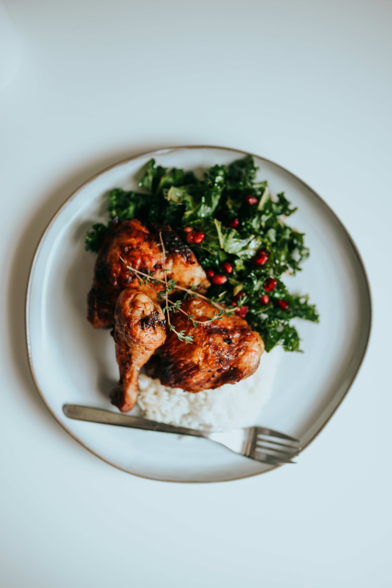

25 min
Salade de fruits
Recette
Hachez les noix grossièrement. Faire fondre le chocolat avec le beurre. Mélanger les oeufs et le sucre et mélanger au chocolat. Ajouter la farine. Mélanger afin d'avoir quelque chose d'homogène
Ingrédients
- Chocolat noir
- 180g